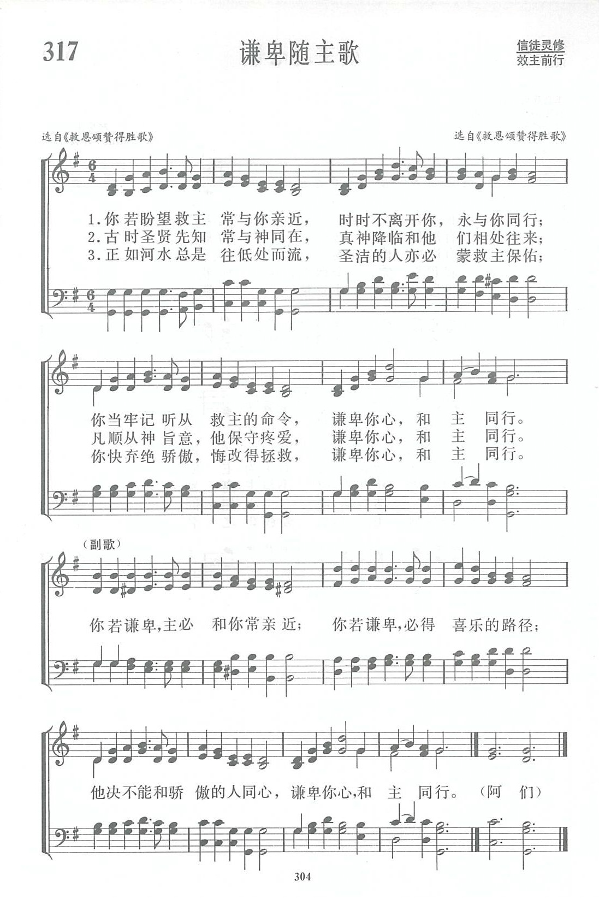

|
|
|
|
1 If thou wouldst have the dear Savior from heaven Refrain: 2 Just as the Lord, in the world’s early ages, 3 Just as the stream finds a bed that is lowly, Evening Light Songs, 1987 (Timeless Truths) |
第317首《谦卑随主歌》 |
|
https://www.zanmeishige.com/tab/13990.html?songbook=1&index=317
 Humble Thyself to Walk with God
|
|
|
|
|


https://www.youtube.com/watch?v=05KDHoCsrfA -
Humble Thy Self And Walk With God
https://youtu.be/ysA4IB8sGh4 https://youtu.be/bv6XYDHemlQ
| ext: | Humble Thyself to Walk with God |
| Author: | Johnson Oatman, Jr., 1856-1926 |
| Tune: | [If thou wouldst have the dear Saviour from heaven] |
| Composer: | W. J. Rogers, 19th Century |
| Short Name: | Johnson Oatman, Jr. |
| Full Name: | Oatman, Johnson Jr., 1856-1922 |
| Birth Year: | 1856 |
| Death Year: | 1922 |
Johnson Oatman, Jr.,

son of Johnson and Rachel Ann Oatman, was born near Medford, N. J., April 21, 1856. His father was an excellent singer, and it always delighted the son to sit by his side and hear him sing the songs of the church.
Outside of the usual time spent in the public schools, Mr. Oatman received his education at Herbert's Academy, Princetown, N. J., and the New Jersey Collegiate Institute, Bordentown, N. J. At the age of nineteen he joined the M.E. Church, and a few years later he was granted a license to preach the Gospel, and still later he was regularly ordained by Bishop Merrill. However, Mr. Oatman only serves as a local preacher.
For many years he was engaged with his father in the mercantile business at Lumberton, N. J., under the firm name of Johnson Oatman & Son. Since the death of his father, he has for the past fifteen years been in the life insurance business, having charge of the business of one of the great companies in Mt. Holly, N. J., where he resides.
He has written over three thousand hymns, and no gospel song book is considered as being complete unless it contains some of his hymns.
In 1878 he married Wilhelmina Reid, of Lumberton, N.J. and had three children, Rachel, Miriam, and Percy.
Excerpted from Biography of Gospel Song and Hymn Writers by Jacob Henry Hall; Fleming H. Revell, Co. 1914
Tune Information
| Title: | [If thou wouldst have the dear Savior from heaven] |
| Composer: | W. J. Rogers (1909) |
| Meter: | 11.11.11.8 with refrain |
| Incipit: | 51232 12166 55135 |
| Key: | G Major |
| Copyright: | Public Domain |
第317首 谦卑随主歌 HUMBLE THYSELF TO WALK WITH GOD _蒙哥马利
经文：“世人哪，耶和华已指示你何为善……，只要你行公义，好怜悯，存谦卑的心，与你的上帝同行”(弥6：8)。
这首《谦卑随主歌》据《新编》五线谱注，词曲都是选自《救恩颂赞得胜歌》，并未注明词作者和曲作者的姓名，经参阅其它英文赞美诗集，可以确定它是蒙哥马利(事略参阅第171首)于1835年的作品。
蒙哥马利生前虽然写过十几卷诗歌、篇幅浩瀚的政论文章，现在均与世无闻，被人遗忘，而独有他的圣诗却至今流传不衰，被各宗派的赞美诗选入。这是因为蒙氏的圣诗不重词藻，不尚浮夸，而是实实在在地表达了信徒的心声。他的诗既陈述了教义，却不是刻板具文苛求于人；既有热炽的感情，却不流于浅薄的狂热。
这首《谦卑随主歌》号召信徒应当牢记听从救主的命令，“谦卑你心，和主同行”。正是这种切实可行、朴素无华的灵修生活，生动地说明，上帝阻挡骄傲的人，赐恩给谦卑的人(雅4：6；箴3：34)的至理。这首诗虽然一般主流派教会并不怎样重视，却被很多福音派的信徒所乐于唱颂。
https://www.xueshengshi.com/?p=8480